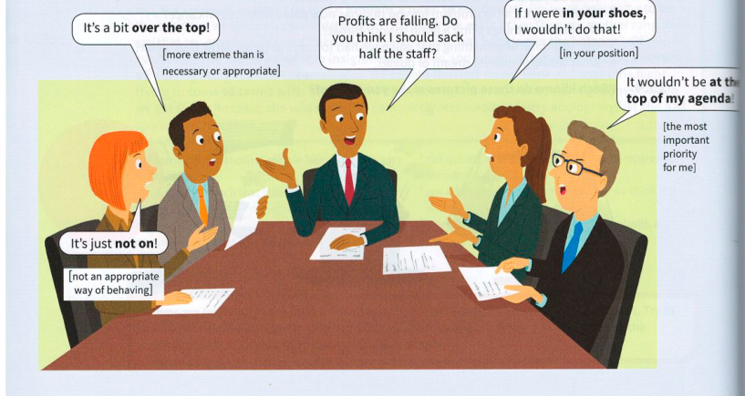

Reacting to what others say
A
Complete phrases
| possible stimulus | response | meaning of response |
|---|---|---|
| I understood everything he said to me in French. I was just pretending not to. | Really? You could've fooled me! | You do not believe what someone says about something that you saw or experienced yourself. |
| Josh adores cowboy films! | There's no accounting for taste(s)! | You can't understand why someone likes or doesn't like something. |
| Are you prepared to hand in your notice to stop them going ahead with their plans? | Yes, if all else fails! | If all other plans do not work. |
| What do you think of the Labour candidate in the election? | The lesser of two evils, I suppose. | It is the less unpleasant of two bad options. |
| How did we get into this terrible position? | One thing just led to another. | A series of events happened, each caused by the previous one. |
| It was such a stupid thing to say to her. | I know. I'll never live it down! | You think that you have done something bad or embarrassing that people will never forget. |
| My boss just congratulated me on my report. Should I ask him for a pay rise now? | Yes, go on. Strike while the iron is hot. | Do something immediately while you have a good chance of success. |
| How are you going to live on such a small salary? | I don't know – one way or another. | You are not sure exactly how yet, but it will happen. |
B
Prepositional phrases
